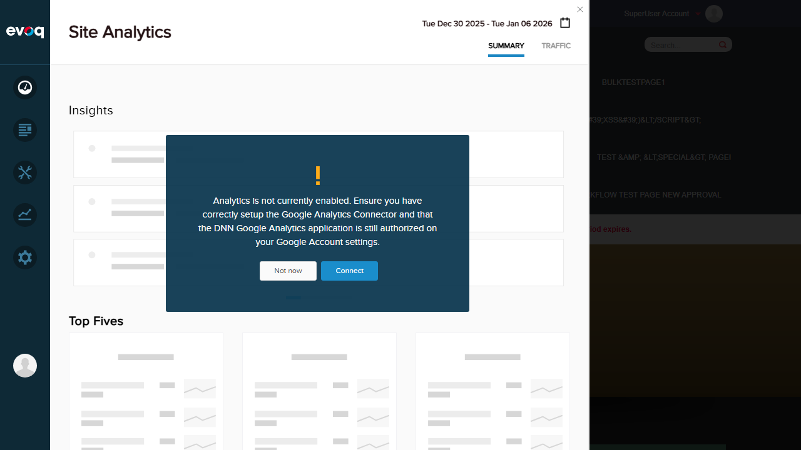

Extension: Evoq.PersonaBar.CommunityAnalytics (PersonaBar Module) Feature Priority: High Test Date: January 6, 2026 UI Location: PersonaBar > Dashboard > Community Analytics > Comparison View
Feature Description
Compare analytics data between two different time periods to identify trends. This feature allows users to view percentage changes, trend indicators (up/down), and verify calculation accuracy across different time periods.
The Community Analytics module fails to load due to a JavaScript error. This blocks ALL test scenarios for the Comparative Analytics feature.
TypeError: utility.serializeCustomDate is not a function
at dashboardClass.init (social-dashboard-combined-instance.js:1025:39)
at Object.init (social-dashboard-combined.js:16:23)
Impact: The entire Community Analytics dashboard cannot be accessed, preventing any testing of the Comparative Analytics feature.
Evidence: Site Analytics (same parent menu) loads successfully, confirming the issue is specific to Community Analytics.
Test 1: Compare Current vs Previous Period
FAIL
Objective: Verify users can compare analytics data between current and previous time periods.
Steps Attempted:
Logged in as SuperUser (host)
Navigated to PersonaBar > Dashboard > Community Analytics
Attempted to access the Comparison View
Result: FAIL - Community Analytics panel fails to load due to JavaScript error. The comparative term selector and period comparison features could not be accessed.
Screenshot: Community Analytics selected but panel is blank due to JS error
Test 2: View Percentage Changes
FAIL
Objective: Verify percentage changes are displayed when comparing time periods.
Steps Attempted:
Attempted to access Community Analytics dashboard
Planned to verify comparativePercent labels
Result: FAIL - Cannot test percentage changes display. The dashboard UI (which includes comparativePercent labels) does not render due to the JavaScript error.
Test 3: Test Trend Indicators (Up/Down)
FAIL
Objective: Verify trend indicators show up/down arrows based on comparison results.
Steps Attempted:
Attempted to access Community Analytics dashboard
Planned to verify trend indicator visibility and accuracy
Result: FAIL - Cannot test trend indicators. The dashboard does not load, so trend indicator elements (createComparativeTooltip) cannot be verified.
Test 4: Verify Calculation Accuracy
FAIL
Objective: Verify comparative calculations are accurate.
Steps Attempted:
Attempted to access Community Analytics dashboard
Planned to compare displayed values with expected calculations
Result: FAIL - Cannot verify calculation accuracy. No data is displayed due to the dashboard failing to initialize.
Test 5: Test with No Previous Data
FAIL
Objective: Verify handling when no previous period data exists for comparison.
Steps Attempted:
Attempted to access Community Analytics dashboard
Planned to test empty/no-data state for comparisons
Result: FAIL - Cannot test empty data handling. The dashboard does not render.
Test 6: Compare Across Different Period Types
FAIL
Objective: Verify comparison works across different period types (Day, Week, Month, Year).
Steps Attempted:
Attempted to access Community Analytics dashboard
Planned to test comparativeTerm dropdown with options: '1 d', '1 w', '1 m', '1 y'
Result: FAIL - Cannot test period type selection. The comparative term dropdown (visible in code at social-dashboard.html:53) cannot be accessed as the dashboard fails to load.
Evidence Screenshots
Setup: Login confirmed as SuperUser AccountNavigation: Dashboard menu showing Site Analytics and Community Analytics options

Comparison: Site Analytics loads successfully (same parent menu), confirming issue is specific to Community Analytics
Observations
Code Review Findings
The source code analysis reveals that Comparative Analytics functionality exists in the codebase:
API Support: The CommunityAnalyticsController.cs exposes endpoints with comparativeTerm parameter for comparing periods
UI Components: The social-dashboard.html contains a comparative-term dropdown selector and comparativePercent display labels
Period Options: The analytics.js defines comparative terms: Year ('1 y'), Month ('1 m'), Week ('1 w'), Day ('1 d')
Root Cause: The error utility.serializeCustomDate is not a function indicates a missing or incompatible utility function that should serialize custom date ranges for the API calls
Relevant Code Files
Services/CommunityAnalyticsController.cs - API endpoints with comparativeTerm parameter
admin/personaBar/scripts/analytics.js - Comparative term definitions and logic
admin/personaBar/social-dashboard.html - UI with comparative term selector
admin/personaBar/scripts/social-dashboard-combined-instance.js - Error occurs at line 1025
Recommendation
Fix the utility.serializeCustomDate function definition or import. This function should be defined in a shared utility module and properly imported into the social-dashboard-combined-instance.js file. Once fixed, all Comparative Analytics features should become accessible for testing.